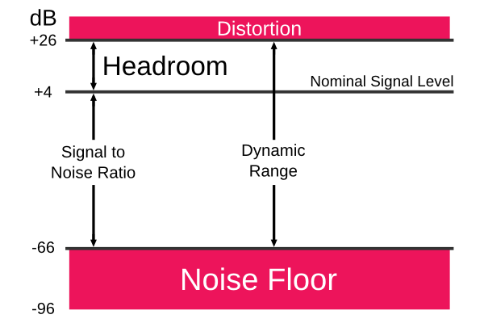

Updated: Sat, 2015-02-21 11:50

What hardware you need to get started recording is dependant on what type of music you want to make. In any case, you will need a DAW, but what about the hardware requirements? There are typically two ways to make music -
Updated: Tue, 2014-08-19 10:23
An audio server, or sound server, is software that manages the use of audio devices. Such software typically runs in the background. PulseAudio is the standard audio server for desktop audio on Linux, while JACK is the standard audio server for professional audio on Linux.
Updated: Mon, 2014-08-18 22:04
Phase is the offset of two waveforms expressed in degrees, where 360 degrees corresponds to a delay of one cycle. Waveforms that are 180 degrees out of phase will cancel each other out to complete silence.
Phase problems can occur when two similar sound sources are out of alignment with each other. This causes the drop out of certain frequencies, which can make recordings sound thin if not dealt with.
Updated: Tue, 2014-08-19 10:31
Modular set ups are where more than one program is used in a set up. JACK allows you to connect and sync various audio programs together so you can benefit from the strengths of individual applications. Session management can be used to manage and recall such complex set ups. A good suite of modular applications is the Non suite, which includes Non timeline, Non mixer and Non sequencer, although any JACK application can be incorporated into a modular set up.
Updated: Tue, 2014-08-19 07:25
Monolithic set ups are where you do all your work in one program. This is the most common approach people using Windows and Mac audio software will be used to. In Linux, JACK allows for very modular set ups, although some applications are fully featured and can also be used as monolithic set ups, eg. Ardour and Qtractor.
Updated: Tue, 2014-08-19 10:40
Signal to noise ratio, sometimes expressed as SNR or S/N, refers to the ratio of the nominal signal level to the undesired noise level. This stretches from just above your noise floor, right up to your nominal signal level. How large your signal to noise ratio is depends on what equipment you are using, your acoustic environment and also the bit depth that you use to record at.

Updated: Tue, 2014-08-19 07:24
Your noise floor is the sum of all noise sources and unwanted signals within your system. This may include low level sound sources that a mic picks up as well as system induced noise that may be introduced, for example, your preamp may also add noise to your signal path.
Pages